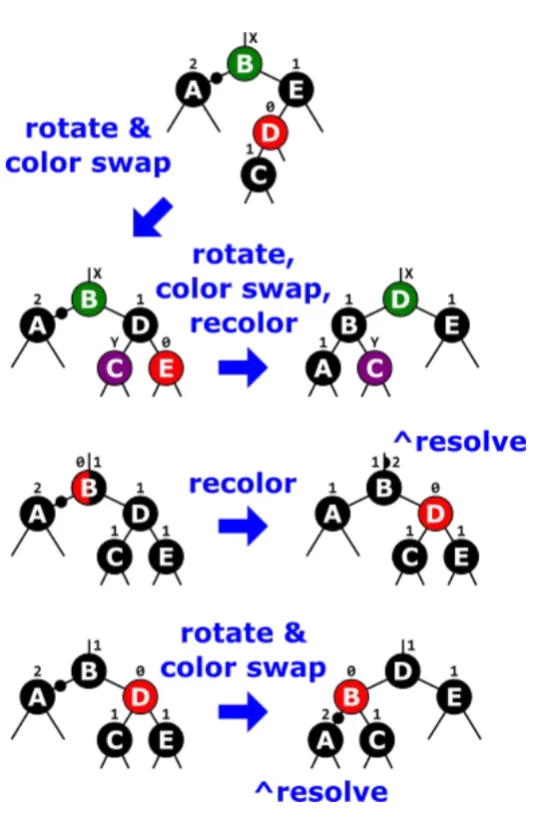

Deleting from a Red-Black Tree
We divide the situations into three types:
- Deleted node is red
- Deleted node is black and replacement is red
- Deleted node is black and without red replacement
Deleted node is red
If deleted node is red, no additional steps needed.
Deleted node is black and replacement is red
If deleted node is black and replacement is red, turn replacement black.
Deleted node is black and without red replacement
Follow the algorithms in the image below:

Want to learn more about this topic? Visit
this website